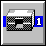
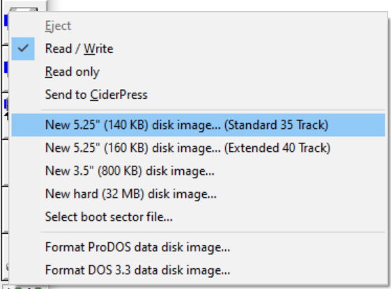

Creating Disk Images
Basic Disk Images
There are two ways in AppleWin to create a blank floppy disk image:
A) Native Disk Menu
The easiest way to to create a blank disk image is to:
- Right-Click on the Drive 1  toolbar button (or press Ctrl-F3) to open the drive pop-up menu.

- Depending on the File System desired select:
- For a blank ProDOS disk select: New ProDOS 5.25" (140KB) disk image (Standard 35 Track), or
- For a blank DOS 3.3 disk select: New DOS 3.3 5.25" (140 KB) disk image (Standard 35 Track).
Newer programs tend use ProDOS while older programs tend to use DOS 3.3.
- You will then be asked to optionally name the disk image.
The name will default to:
- blank_floppy_###.po for ProDOS, or
- blank_floppy_###.do for DOS 3.3.
NOTE: The ### is the current date-time-stamp in YEAR-MON-DAY-HHh-MMm-SSs format.
- Click SAVE when ready.
You are now ready to use your new disk image.
B) Classic Disk Creation
In older versions of AppleWin there was only one way to natively create an empty disk image.
To create an empty disk image:
- Clicking on the drive icon, and
- Type an image file name ending in .DSK (or .DO) which doesn't already exist.
AppleWin will automatically create a new 5.25" image
(standard 140 KB, 16 sectors/track, 35 tracks) file which is empty and non-bootable. (See Disk Sizes or Advanced Formatting Options for more information.)
Manually putting DOS 3.3 on a blank disk so it is bootable
Formatting a disk will put a File System on it and (optionally) copy a Disk Operating System (DOS 3.3, ProDOS, etc.) onto it. This will also make the disk bootable (copies a small assembly language program called the boot sector to Track 0, Sector 0) such that you can use PR#6 too boot it.
Specifying a new disk image is like inserting a blank,
unformatted floppy disk into a real drive. This means that
the image must be formatted (either by the emulator or some other utility) before it can be used.
Specifically, this is what you would do using DOS 3.3:
- Click on the Drive 1 toolbar button (or press F3)
- Load a master DOS 3.3 disk image (eg. DOS 3.3 System Master - 680-0210-A.dsk) in drive 1 and boot the emulated Apple.
- Boot the emulated Apple by clicking on the button (or press F2).
- Click on the Drive 1 toolbar button (or press F3) again.
- Instead of selecting a disk image from the list, type in a name for a new disk image and press enter.
NOTE: The filename SHOULD end in .DSK or .DO.
- Type in a program that you want DOS to run whenever this new disk is booted. A simple but useful
program is this Applesoft BASIC program:
10 PRINT CHR$(4);"CATALOG"
- Type "INIT
HELLO" to initialize (format) the disk image.
This will:
- Put the DOS 3.3 File System on the disk,
- Write DOS 3.3 to the first 3 tracks and make the disk bootable,
- Write your program to disk.
You now have a working disk
image, which you can use to save documents or other information. If you
want to fill this image with data from a real floppy disk that you
have, then you need to "transfer" the disk's data. See the Transferring
Disk Images topic for more information.
Please note that not all disk image types supported by
AppleWin can be created in this manner. Since there is no way
to detect the image type from the image itself, it is determined by the
given file extension only. Six extensions are allowed:
- .DSK -- DOS 3.3 sector order,
- .DO -- DOS 3.3 sector order,
- .PO -- ProDOS sector order,
- .HDV -- ProDOS (hard drive) volume in ProDOS sector order,
- .NIB -- older raw nibble image that supports up to 6656 (0x1A00) nibbles/tracks, and
- .WOZ -- the newest format that supports all copy protection formats.
If the extension is completely omitted, .DSK will be chosen by default.
For more information, see Disk Image Formats.
Advanced Disk Creation
For finer control over disk formatting see Advanced Formatting Options.